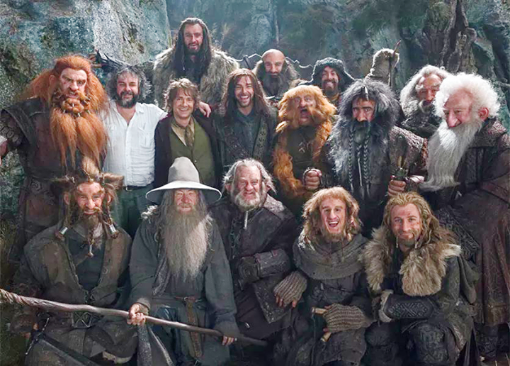
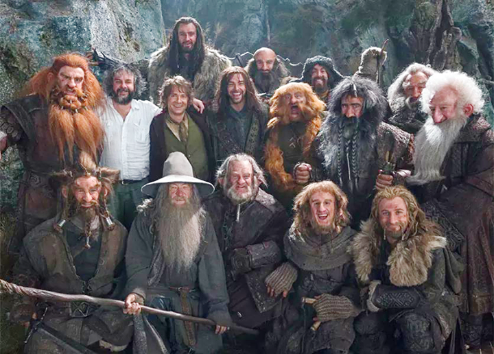

Thorin
"If more of us valued food and cheer and song above hoarded gold, it would be a merrier world. But, sad or merry, I must leave it now. Farewell." —The Hobbit, The Return Journey Thorin II "Oakenshield", eventually called King under the Mountain or Mountain King[1], was the son of Thráin II, the older brother of Frerin and Dís, the grandson of King Thrór and the uncle of Fíli and Kíli. Thorin was best known for his deeds as leader of a company that infiltrated the lost Kingdom under the Mountain to take it back from Smaug and for leading an alliance of Men, Dwarves, and Elves in the Battle of Five Armies.Balin
Balin was a Dwarf leader, the son of Fundin, and elder brother of Dwalin. He was one of the thirteen Dwarves who accompanied Thorin II Oakenshield on the quest to regain the Lonely Mountain. A Dwarf Lord known for his wise counsel and willingness to listen, he was one of Thorin's closest friends and advisers. Balin was distantly related to him, and a descendant of the noble house of Durin. He later went to re-establish the kingdom of Moria, but within five years it was overcome once more by Orcs, and he was killed there along with the rest of his companions.Dwalin
"It was a dwarf with a blue beard tucked into a golden belt, very bright eyes under his dark-green hood." —The Hobbit describing Dwalin Dwalin was one of the Dwarves who traveled with Bilbo and Gandalf as a member of Thorin and Company on the quest to regain the Lonely Mountain from the Dragon Smaug. He was the brother of Balin and the youngest son of Fundin.Oin
Óin was a Dwarf of Durin's Folk known for being a part of Thorin and Company during the Quest of Erebor.Gloin
Glóin son of Gróin was one of the Dwarves of Thorin II Oakenshield's company who set out to reclaim the Lonely Mountain in the Quest of Erebor. He was also the father of Gimli, who became a member of the Fellowship of the Ring. Glóin chiefly appears in The Hobbit as a supporting character. Glóin also appears in The Fellowship of the Ring during the Fellowship's stay in Rivendell.Bombur
Bombur was a Dwarf who accompanied Thorin Oakenshield and Bilbo Baggins on their journey to the Lonely Mountain as part of the company, alongside his brother Bofur and cousin Bifur. Bombur was noted as the fattest Dwarf in the company.Bifur
Bifur was a Dwarf of the late-Third Age. He is best known for being a companion to Bilbo Baggins and Thorin Oakenshield on the quest to regain the Lonely Mountain, along with his cousins Bofur and Bombur.Bofur
Bofur was a Dwarf of the late-Third Age. He is best known for being companions to Bilbo Baggins, Thorin Oakenshield and Gandalf on the quest to reclaim Lonely Mountain from the dragon Smaug, along with his brother Bombur and cousin Bifur.Dori
Dori was a Dwarf of Durin's Folk, who, along with his brother Nori and cousin Ori,[1] travelled with Bilbo Baggins and Thorin Oakenshield as a member of Thorin's Company on the Quest for Erebor, to reclaim the Lonely Mountain from the dragon Smaug. Dori was among the Dwarves at Bag End who joined in singing about "blunting the knives" and "bending the forks"; as well as accompanying by playing the flute. He was described as “decent fellow despite his grumbling”. He often wore a red-violet coat while on the Quest for Erebor. He was noted by Thorin to be the strongest of the thirteen companions.[2]Nori
Nori was a Dwarf of Durin's Folk. He had a brother named Dori as well as a cousin named Ori,[1] and was a remote kinsman of Thorin Oakenshield. His hood was purple, he played the flute, and he was very fond of regular and plentiful meals like his hobbit friend, Bilbo Baggins.Fili & Kili
Fíli and Kíli were brothers, the youngest of the thirteen dwarves who set out with Thorin Oakenshield's company, along with Gandalf and Bilbo Baggins, to reclaim the Lonely Mountain from the dragon Smaug. Fíli and Kíli were the two most active dwarves of Thorin's company, and apart from Balin, and possibly Bombur, they appeared more frequently as "individual" characters in Tolkien's novel than the rest of Thorin's companions, who were most often named only in "group" references to the entire company.